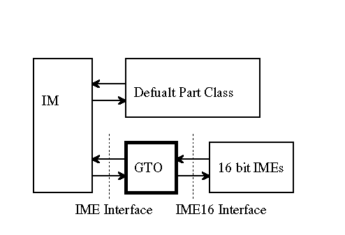

The IM system provides the mapping layer named GTO (Glue of Thunk Operation) as following.
The GTO uses the default part class as the user interface window.
User Interface Consideration
The 16 bit IME has some unique User Interface Dialog. The system does not prevent the 16 bit IME from displaying the unique UI Dialog.